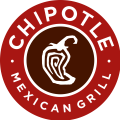

4/1/17
Woodhaven District Event
The Goon Squad participated in the district event at the Woodhaven Event event from March 24 to March 25. The Goon Squad participated in 12 qualifying matches, and won 8 of them. The team seeded eighth,
but team 5090, Torque-Nado invited the Squad to the #5 alliance, and they accepted, along with 815, Advanced Power. The alliance won one of the three qualifying matches, but lost the other two,
and were elimitated.
|
3/16/17
St. Joeseph District Event
We participated in the district event at St. Joseph High School District event from March 10 to March 11. The Goon Squad participated in 12 qualifying matches. The Team lost 4 matches and
won 8 of them. Because the team seeded ninth and was moved up to the fifth alliance captain, we selected alliance which contained team 66, the Grizzlies, and team 6627, the Nordic Knights. Unfortunately, we were eliminated in quarterfinals.
|
2/28/17
Goon Squad Trivia Night
The Goon Squad recently had a trivia night at the Woodhaven Moose. The trivia night went very successfully, and everyone had a great time.
|
2/18/17
Goon Squad Chipotle Fundraiser
The Goon Squad is having a fundraiser at Chipotle, a Mexican fast food restaurant. It will be on March
29 from 4:00 PM to 8:00 PM EDT. The fundraiser will be held at the Chipotle
at 23061 Allen Rd, Woodhaven, MI 48183. We look forward to seeing you then!
|